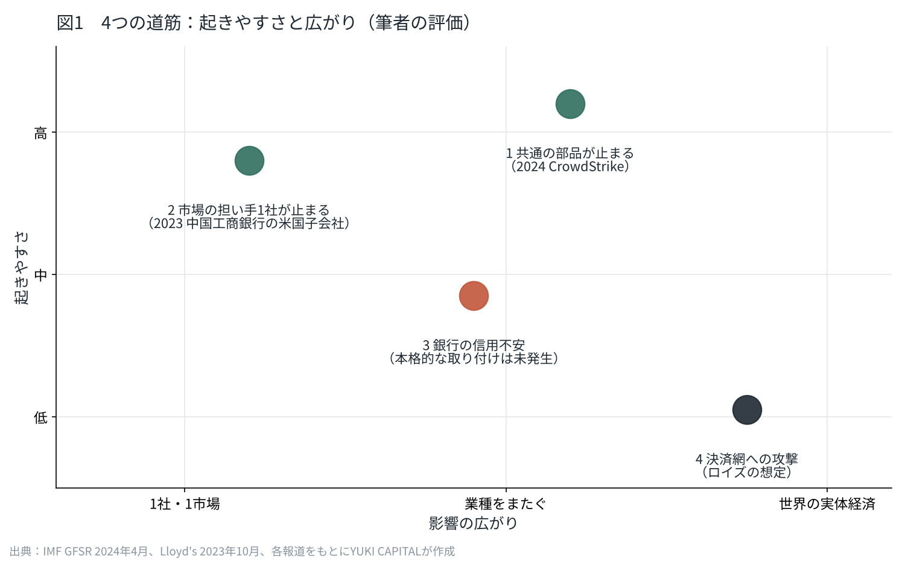
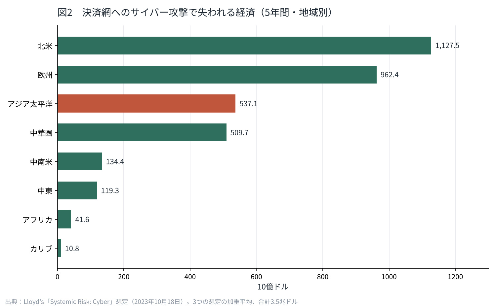

サイバー攻撃は世界同時株安の引き金になりうるか
2026年10月23日、僕が持つ銀行株4銘柄がそろって下がった。同じ週、GMOのサーバー26,739件に影響のおそれがある不正アクセスが公表されていた。
金融危機の多くは、貸し出しの焦げ付きや金利の急変から始まってきた。しかし、データの漏えいや改ざんが起点になる下げ方は、まだ本格的には起きていない。
この記事では、国際機関や保険市場の一次資料をもとに、サイバー攻撃が世界同時の株安につながる道筋を4つに分け、起きやすさの順に並べる。

金融はサイバー攻撃の最大の標的の一つになった
国際通貨基金（IMF）は2024年4月の国際金融安定性報告書で、サイバー攻撃を金融の安定を脅かすリスクとして1章を割いた。報告によれば、サイバー攻撃はパンデミックの前と比べて2倍を超えた。金融の会社を狙ったものは全体の約5分の1を占め、なかでも銀行が最もさらされている。
損失の大きさも変わった。IMFが推計する「極端な損失」の規模は、2017年から4倍を超え、25億ドル（約3,953億円）に達した。1回の事件で出る損失の上限が、年を追って上がっている。
日本の数字も同じ方向を指す。東京商工リサーチの調べでは、2025年に上場企業とその子会社が公表した個人情報の漏えい・紛失180件のうち、116件（64.4%）が「ウイルス感染・不正アクセス」によるものだった。2026年は10月5日までに、100万件を超える大型の漏えいが10件起きている。
なぜサイバーのリスクは「同時」に広がりやすいのか
これまでの金融のリスクの多くは、国や業種ごとに時間差で広がってきた。住宅ローンの焦げ付きが世界の銀行に届くまでには、月や年の単位の時間がかかった。
しかし、いまの金融は、同じクラウド、同じセキュリティ製品、同じ決済の仕組みを、世界中の会社が共有している。1つの部品に問題が出れば、それを使う全員が同じ瞬間に影響を受ける。投資先を国や業種で分けているつもりでも、裏では同じ部品でつながっていることがある。
IMFの報告も、金融の会社が外部のIT事業者に頼る度合いが高まっていることを、リスクが広がる経路の1つとして挙げている。そのうえで、金融に向けたサイバーの戦略や規制を持つ国は、調べた国の約半数にとどまるとしている。守りの仕組みは、攻撃の広がり方にまだ追いついていない。
これまでの事件は、どこまで広がったのか
株安や市場の混乱につながった例は、すでにある。ただし、どれも「世界同時の暴落」までは届いていない。
2023年11月9日、中国工商銀行の米国の証券子会社がランサムウェアの被害を受けた。米国債の取引の決済が滞り、一部の取引は他の経路へ回された。市場の担い手1社が止まると、その先の取引相手にまで遅れが及ぶことが示された。米国債は世界の金融取引で担保として使われる資産で、その決済の遅れは、世界の資金の流れに直接かかわる。
2024年7月19日には、攻撃ではなく、セキュリティ会社CrowdStrikeの更新の不具合で、約850万台のWindowsが起動できなくなった。航空・銀行・医療が同時に止まり、保険のParametrixは、米国のFortune 500企業だけで直接損失を54億ドル（約8,537億円）と推計した。Fortune 500に入る航空会社はすべて影響を受け、1社あたりの平均損失は1億4,300万ドル（約226億円）だった。97%を超える端末が戻るまでに、およそ1週間かかっている。
攻撃でなくても、共通の部品が1つ止まれば、業種と国境をまたいで同時に止まる。ここが、サイバーのリスクが他のリスクと違うところだと思う。

4つの道筋を、起きやすさの順に並べる
一次資料と過去の事件から、サイバー攻撃が株安につながる道筋を4つに分けた。起きやすさの順位は、実際に起きた例の有無と、国際機関や保険市場の推計をもとにした僕の評価である。
| 順位 | 道筋 | 起きた例 | 広がり方 |
|---|---|---|---|
| 1 | 共通の部品が止まる（更新の不具合・攻撃） | 2024年7月 CrowdStrike | 業種と国をまたいで数日止まる |
| 2 | 市場の担い手1社が止まる（ランサムウェア） | 2023年11月 中国工商銀行の米国子会社 | 決済の遅れが取引相手へ |
| 3 | 銀行の顧客情報や残高が狙われ、信用不安になる | 本格的な取り付けは未発生（IMF） | 預金の流出と銀行株の下落 |
| 4 | 決済網そのものが攻撃され、世界の経済が止まる | 保険市場の想定のみ | 世界の実体経済へ |
1と2は、すでに起きている。止まった時間は数日で、株価への影響も一時的だった。3は、IMFが中小の米銀でサイバー攻撃の後に預金が緩やかに、しかし持続的に流出したと分析している一方、大きな「サイバー取り付け」はまだ起きていないとしている。
最悪の想定：決済網が止まったとき
4の道筋については、保険市場のロイズが2023年10月に想定を公表している。主要な決済の仕組みがサイバー攻撃で止まった場合、世界の経済が5年間で失う額を、重さの違う3つの想定の加重平均で3.5兆ドル（約553兆円）と見積もった。
最も軽い想定でも損失は2.2兆ドルで、起きる確率は年3.32%、つまり30年に1度とされた。最も重い想定は1,000年に1度で、損失は16兆ドルに達する。国別では米国が1.1兆ドル、中国が4,700億ドル、日本が2,000億ドル（約31.6兆円）だった。

30年に1度という数字は、小さくない。住宅ローンを組む期間の中に、1回は入ってくる計算になる。
銀行の残高が書き換えられたら
僕が最も気にしているのは3の道筋だ。銀行は、顧客の情報と、お金の情報が結びついている場所である。漏えいだけでなく、残高が書き換えられる可能性もある。
仮に、5,000万円あると思っていた預金が、画面上で0円と表示されたとする。多くの人は銀行へ走るだろう。取り付けが起き、銀行は全員に払える現金を手元に持っていない。そこから悪い連鎖が始まる。2023年の米国の地方銀行の破綻では、預金の流出がSNSとスマートフォンの送金で、これまでにない速さで進んだ。信用の崩れ方は、すでに速くなっている。残高の改ざんが起きれば、本当の数字がどれなのかを確かめるだけで時間がかかり、その間に不安が先に広がるだろう。
さらに、銀行・証券・航空が同時に止まる事態を考えると、世界はインターネットが止まっても動き続けられるようには作られていない。ここから先は、経験のない領域だと思う。

僕はこう見ている
僕は、サイバー攻撃が世界同時株安の引き金になる可能性は、かなり大きいと考えている。順位をつけるなら、最初に来るのは決済網への大きな攻撃ではなく、共通の部品の停止か、銀行の信用不安だろう。
しかし、だからといって銀行株を売るとは決めていない。この週も、持っている銀行株は1株も売買しなかった。お金の大きい部分ほど、止まったときに強い大手の銀行と証券会社に置いている。実業でも同じ考え方で、会員の情報は必要な分だけを持ち、守りはソフトよりも置き場所で考えている。下げ方が新しくても、相場を当てにいくより、置き場所を設計しておくほうが僕には合っている。
これから見ていくのは、銀行や証券会社が障害の後にどれだけ早く、何を公表するかだ。新しい下げ方に、世界がどこまで備えているのか。僕はそれを、自分の口座の数字と一緒に記録していく。
出典
- IMF「Global Financial Stability Report, April 2024, Chapter 3: Cyber Risk: A Growing Concern for Macrofinancial Stability」 https://www.imf.org/en/blogs/articles/2024/04/09/rising-cyber-threats-pose-serious-concerns-for-financial-stability
- Lloyd's「Lloyd's systemic risk scenario reveals global economy exposed to $3.5trn from major cyber attack」（2023年10月18日） https://www.lloyds.com/about-lloyds/media-centre/press-releases/lloyds-systemic-risk-scenario-reveals-global-economy-exposed-to-3.5trn-from-major-cyber-attack
- SecurityWeek「97% of Devices Disrupted by CrowdStrike Restored as Insurer Estimates Billions in Losses」 https://www.securityweek.com/97-of-devices-disrupted-by-crowdstrike-restored-as-insurer-estimates-billions-in-losses/
- Dark Reading「Treasury Markets Disrupted by ICBC Ransomware Attack」（2023年11月9日） https://www.darkreading.com/attacks-breaches/treasury-markets-disrupted-from-icbc-ransomware-attack
- 東京商工リサーチの調査（Web担当者Forum）「2025年の個人情報漏えい、被害人数は3,063万人」 https://webtan.impress.co.jp/n/2026/02/06/52123
- ScanNetSecurity「上場企業の個人情報漏えい 2026年は100万件以上がすでに10件」 https://scan.netsecurity.ne.jp/article/2026/10/21/56521.html
- GMOインターネットグループ「お名前.com デスクトップクラウドへの不正アクセスについて（第3報）」 https://internet.gmo/news/article/248/
- Federal Reserve「Review of the Federal Reserve's Supervision and Regulation of Silicon Valley Bank」（2023年4月） https://www.federalreserve.gov/publications/files/svb-review-20230428.pdf
写真：Nicholas Cappello／CHUTTERSNAP（Unsplash）。図はYUKI CAPITALが作成
日々の数字と判断は、Xで記録している。